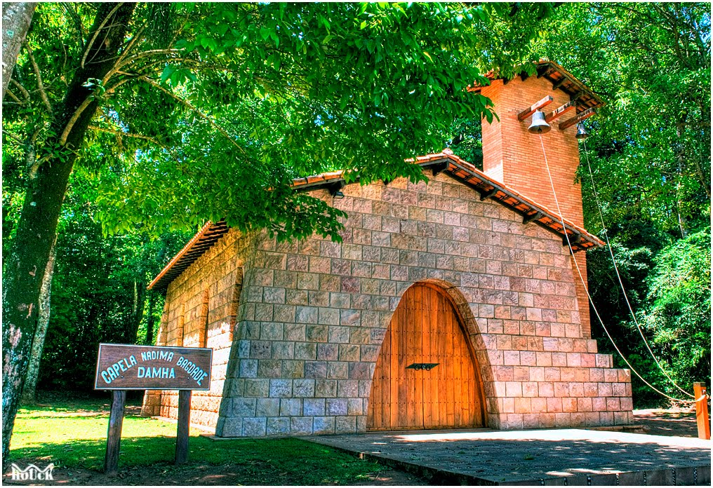
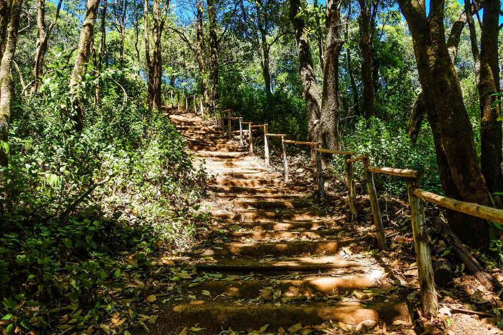

Trilha da capela
Pequena trilha com aproximadamente 500m, cercada por fragmento de mata bem fechada, com algumas árvores identificadas com grandes placas de madeira.

Trilha da Babilonia
A trilha da Babilônia fica pertinho da cidade, com pouca estrada de terra e numa trilha relativamente fácil de descer, até mesmo de bicicleta.

Trilha da natureza
A Trilha da Natureza está localizada dentro de uma área de reserva da Universidade Federal de São Carlos (UFSCar). O percurso da trilha é de aproximadamente 2 km.